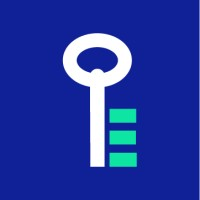
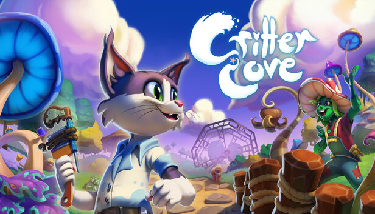
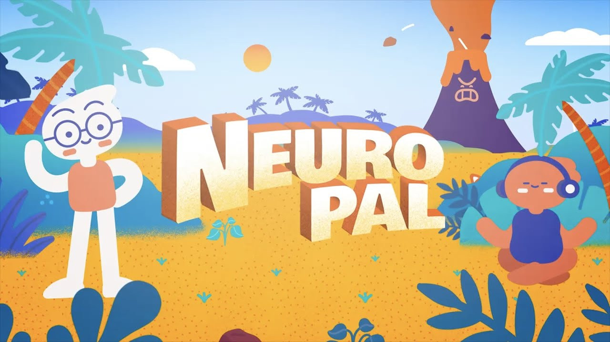

Delivery
Ownership without drama.
I can own features, clean up unstable systems, and help carry projects through the harder parts of production.
Unity Developer / Porto Area, Portugal
I work across gameplay systems, UI, optimization, tools, and production support. I'm comfortable in different team sizes, from solo work to teams of around 60, and I can jump into existing projects without slowing them down.
What I bring most is turning messy requirements into stable, shippable work. I like working closely with designers and artists, and I'm used to Git, Bitbucket, Scrum, and Kanban workflows.
Delivery
I can own features, clean up unstable systems, and help carry projects through the harder parts of production.
Scalability
I look for ways to make projects easier to maintain, using editor tools, reusable templates, or more scalable code.
Team Fit
I communicate clearly and work well with designers, artists, QA, and junior developers in fast-moving environments.
Selected Projects
FakeDoor

Worked on a WebGL-based interactive learning platform where performance, reusable systems, and team support mattered. A lot of the project was repetitive, so I pushed toward more scalable and reusable approaches instead of one-off implementation.
Impact: improved team scalability through internal tools, reusable templates, and cleaner production patterns.
Product under NDA.
Gentleman Rat Studios
Contributed during production on Critter Cove, a cozy open-world life sim and town builder. My work was concentrated in bug hunting, bug fixing, build review, and helping unblock technical issues during a short production cycle.
Impact: helped the team move faster by finding, fixing, and unblocking gameplay and version-control issues during production.

Associacao Viver a Ciencia / UPorto
Maintained and improved a Unity application published on iOS and Android. This was one of the strongest examples of independent ownership in my experience: I helped move a previously started project forward, stabilized it, and supported it through optimization and publishing.
Impact: reduced build size from 359 MB to 170 MB while fixing gameplay, collision, and publishing-related issues.

Ludus / Saltu
Worked across multiple Unity projects in a larger team environment, including prototypes, full games, audio implementation, architecture discussions, and leadership responsibilities.
Impact: combined hands-on Unity implementation with leadership, mentoring, and audio support inside a 20+ person team.
Some of these projects are protected by NDA, so the details here are intentionally broad.
Current Personal / Collaborative Project
Chasers is a collaborative game project with friends where I am currently the only active developer. I keep it below the studio work here because it is personal, but it is still useful as proof of initiative, technical range, and ownership.
Impact: demonstrates solo ownership across gameplay, animation systems, shaders, AI, and reusable runtime systems.
The itch.io page is currently restricted, so I'm linking it instead of embedding a broken playable block.
Skills
Mentoring and Teaching
FakeDoor
Supported junior teammates with feedback, review, and day-to-day guidance so they could contribute more confidently.
Ludus / Saltu
Helped teach beginners and share practical development knowledge inside a team environment with collaborative learning and internal jams.
LCD Porto
Outside studio roles, I also taught beginners through courses at LCD Porto.
Creative Range
This is supporting material, but it helps show how I work with artists, audio people, and smaller multidisciplinary teams.
3D Modeling
Blender is one of my strongest side skills. It helps me understand art production more deeply and contribute more effectively in multidisciplinary environments.
Music and Audio
I also work in music and sound design. That has been useful in FakeDoor, N.R.Cheese, and Ludus, where I contributed audio-related work alongside programming.
Contact
If you need someone who can implement systems, solve production bugs, and work well with a team, I'd be glad to talk.